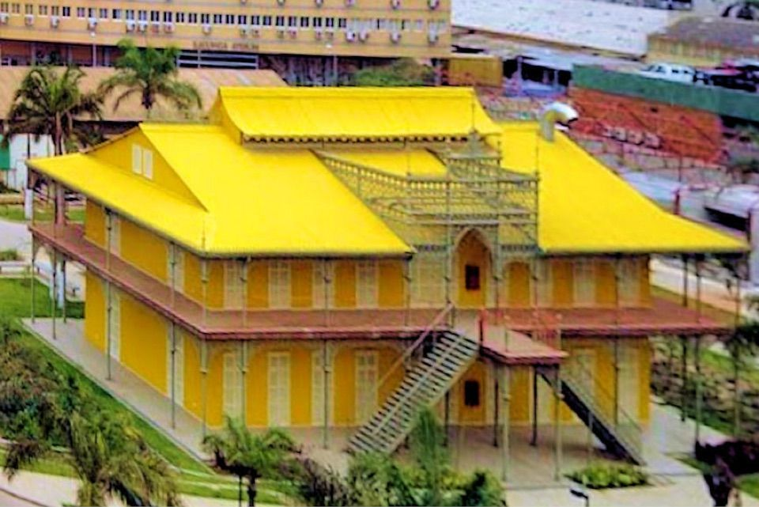

Cultura e monumentos · Baixa, Luanda
Palácio de Ferro
Edifício histórico de ferro na Baixa de Luanda, durante muito tempo atribuído a Gustave Eiffel.
Informação prática
- Horário
- Por confirmar
- Morada
- Baixa, Luanda
- Preço
- Preço por confirmar
Verificado a 5 de outubro de 2026. Fontes: Wikipedia. Confirme sempre antes de ir.
É o dono deste lugar? Atualize os dados no Tuende: telefone, horário, preços e fotos. É grátis e confirmamos consigo antes de publicar.
Perto daqui
- EPIC SANA Luanda Hotel · Alojamento · 0,3 km
- Museu da Moeda · Museu · 0,3 km
- Hotel Tivoli · Alojamento · 0,3 km
- Elinga (bar) · Bar · 0,3 km
- Hotel Trópico · Alojamento · 0,4 km
- Skyna Hotel Luanda · Alojamento · 0,4 km
Distâncias em linha reta.
Próximos eventos aqui
- Undengue Uami: As Músicas que os Meus Pais Ouviam · domingo, 8 de novembro de 2026
- Batuque Fest · sexta-feira, 13 de novembro de 2026
- Dançar Kuya: Nzevo Ni Kalunga, pelo Ballet Tradicional de Angola · sábado, 14 de novembro de 2026
- Ela Me Enlouquece, de Nelson Cabanga · domingo, 15 de novembro de 2026
- Cine PF: Massoxi, de Alberto Docas · quinta-feira, 26 de novembro de 2026
- Concerto PF: Anabela Aya · sexta-feira, 27 de novembro de 2026
- Angel Fashion 2026: O Grito da Ancestralidade · sábado, 28 de novembro de 2026
- Dançar Kuya: O Desafogo de Lu-Ndandu · sexta-feira, 4 de dezembro de 2026
- Filhos da Pátria, pelo Grupo de Teatro Kulonga · sábado, 5 de dezembro de 2026
- Cine PF: Elo, de Edgar Cláudio · quinta-feira, 17 de dezembro de 2026
Mais lugares em Luanda
- Café del Mar · Ilha de Luanda, Luanda
- O Madeirense · Liga Africana, Luanda
- Lookal Mar · Ilha de Luanda, Luanda
- Lookal Beach Club · Ilha de Luanda, Luanda
- Miradouro da Lua · Belas, Luanda
- NovaCâmbios · Av. Comandante Valódia, Luanda
- Fortaleza de São Miguel · Ingombota, Luanda
- Memorial Dr. António Agostinho Neto · Praia do Bispo, Luanda
Palácio de Ferro — Culture and landmarks, Baixa, Luanda
Historic iron building attributed to Gustave Eiffel.
Historic iron building in downtown Luanda, long attributed to Gustave Eiffel.
Prices in Kwanza, opening hours and directions are in the Tuende app (Portuguese and English).